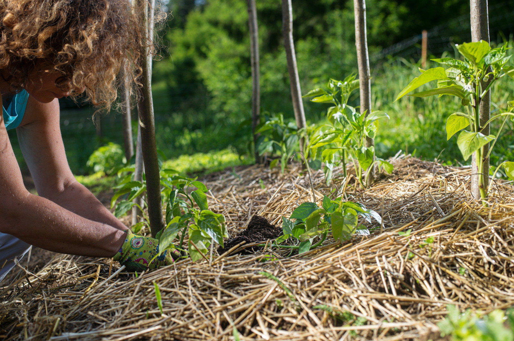

Sustainable Practices
Learn about effective land management techniques
Crop Rotation
 Alternating crops to maintain soil health and prevent nutrient depletion. This practice helps break pest and disease cycles while improving soil structure.
Alternating crops to maintain soil health and prevent nutrient depletion. This practice helps break pest and disease cycles while improving soil structure.
No-Till Farming
Minimizing soil disturbance to preserve structure and reduce erosion. This method helps retain organic matter and moisture in the soil.
Cover Crops
 Protecting soil during off-seasons and adding organic matter. Cover crops prevent erosion and improve soil fertility naturally.
Protecting soil during off-seasons and adding organic matter. Cover crops prevent erosion and improve soil fertility naturally.
Contour Farming
 Following land contours to reduce water runoff and soil erosion on sloped terrain. This technique helps preserve topsoil and maintain water quality.
Following land contours to reduce water runoff and soil erosion on sloped terrain. This technique helps preserve topsoil and maintain water quality.